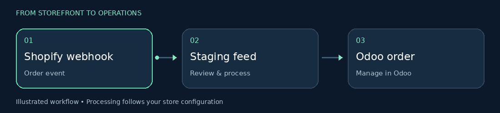
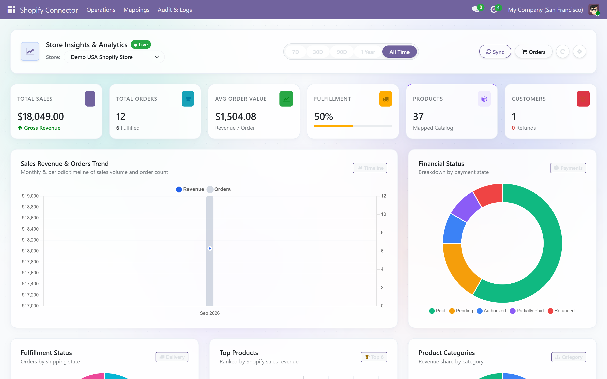
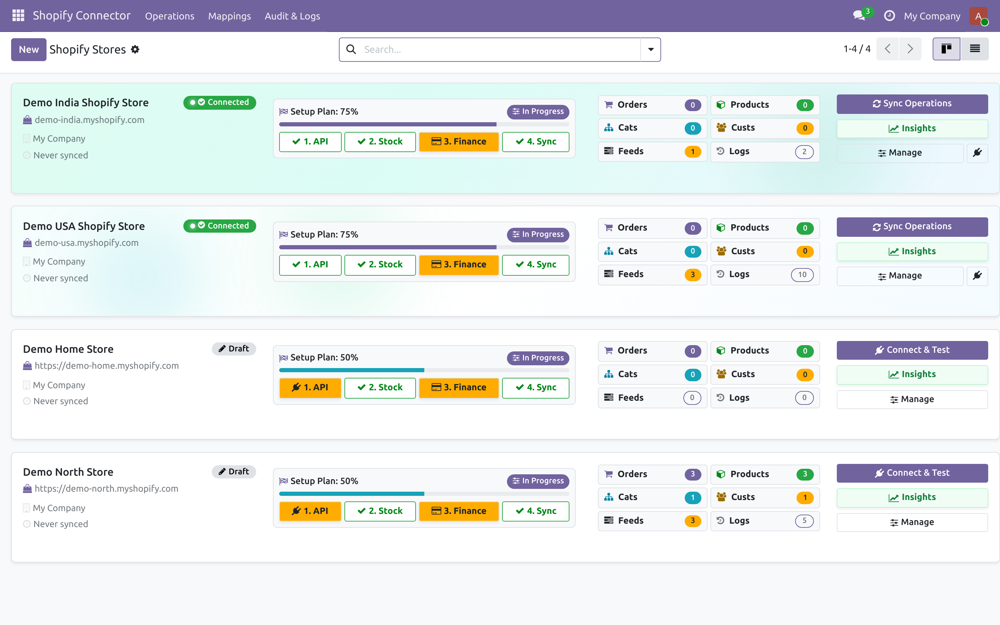
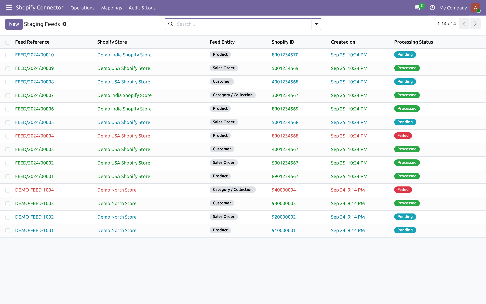
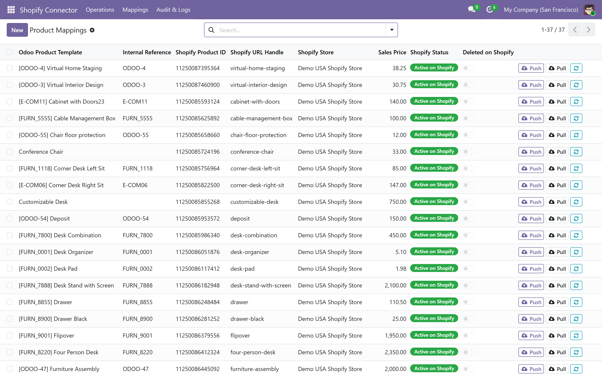
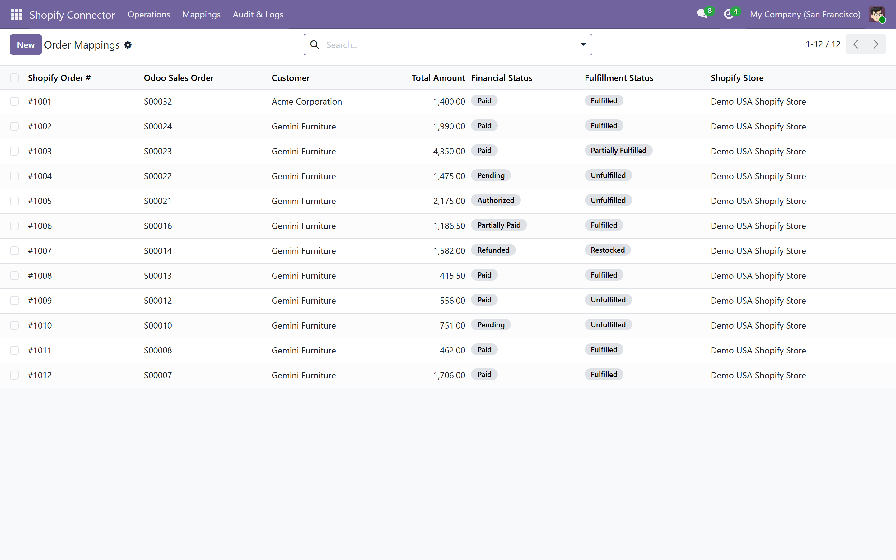
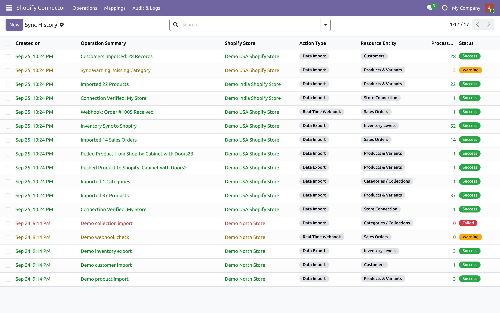

ODOO 19 | SHOPIFY CONNECTOR
Shopify Connector for Odoo 19
Connect Shopify stores with Odoo and manage product, order, customer, inventory and fulfillment workflows from your Odoo workspace.
Supports: Odoo 19 Community and Enterprise |
Deployment: Odoo.sh and On-Premise
Key features
- Configure multiple Shopify stores with store-specific settings.
- Review incoming product, variant, order, customer and collection feeds, including pending, processed and failed states.
- Maintain Shopify-to-Odoo product, variant and order mappings.
- Sync stock levels to Shopify locations and update fulfillment information after delivery validation.
- Verify incoming Shopify webhooks using HMAC-SHA256 signatures.
- Review synchronization history, results, processed record counts and log details.
How the workflow works
Shopify events enter a staging feed for review and processing into Odoo records.

Explore the connector
These screenshots show the main areas of the Odoo connector.
Store dashboard and insights

Store connections

Staging feeds

Product and variant mappings

Order mappings

Synchronization history

|
📅 Request a Demo
|
|
Clicking will open your email app with a pre-filled demo request template.
|